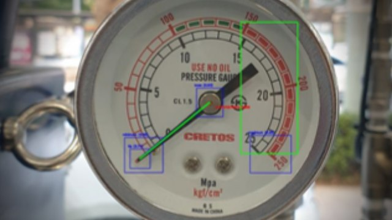
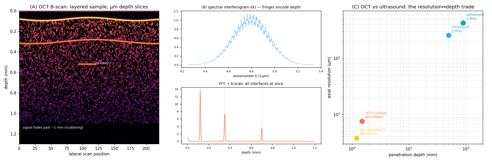
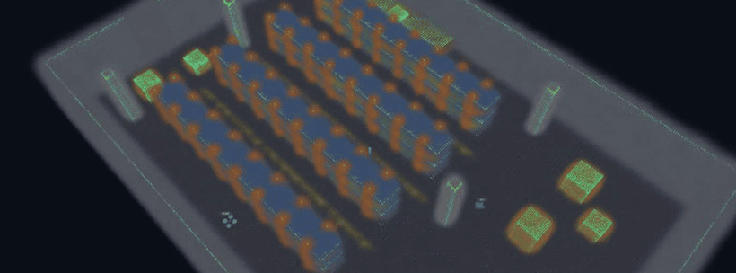
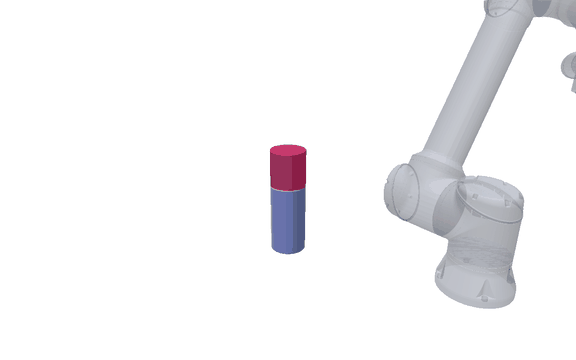

01
LiDAR SLAM 수직 드리프트 원인 규명
- 문제
- FAST-LIO2 맵 생성 중 고도(z)가 계속 흘러 층과 평면이 어긋남.
- 접근
- 실기 rosbag을 분석해 센서 장착 tilt를 원인으로 특정하고 보정 적용.
- 결과
- 장시간 매핑에서 층·평면이 어긋나던 현상을 해소하고, 재현 조건과 보정 절차를 팀 공용 튜닝 기준으로 문서화.
Software Engineer · 경력 10년
버넥트 피지컬 AI팀 책임연구원 — Unity · XR · AI/컴퓨터비전 · 로봇 자율주행
디지털 휴먼·XR 콘텐츠·컴퓨터비전에서 출발해, 최근에는 로봇 강화학습·SLAM·자율주행까지 영역을 넓혀온 소프트웨어 엔지니어입니다. 새로운 도메인의 문제를 빠르게 학습해 실제 동작하는 제품·데모로 만들어내는 것을 강점으로 삼습니다.
10년 동안 다룬 기술의 축이 어떻게 이동했는지를 한 장으로 정리했습니다. 웹·클라우드에서 시작해 Unity·XR·실시간 그래픽스를 거쳐, 지금은 컴퓨터비전·SLAM·강화학습·로봇 자율주행을 다룹니다.
← 좌우로 스크롤 →




사진은 VIRNECT · FXGear 공식 채널에 공개된 영상의 장면과, 알고리즘 검출 결과 이미지입니다. 공개 자료가 없거나 기술이 드러나지 않는 시기는 직접 작성한 개념 도식으로 대체했습니다.
재직 중 수행한 고객·국가R&D·사내 제품화 작업, 재직 경력 밖의 외부 의뢰, 그리고 개인 R&D 프로젝트를 분리해 볼 수 있도록 정리했습니다.
2026년에는 공식 과제와 별도로, 사내 개발 생산성·로봇 R&D·AI 에이전트 자동화를 위한 내부 AX 도구와 실험 플랫폼을 직접 기획하고 구현했습니다. 납품형 대표 프로젝트가 아니라, 팀이 반복 작업을 줄이고 새로운 로봇/AI 워크플로를 검증하기 위한 기반 작업입니다.
팀원별 AI 파트너, 자연어 작업 오케스트레이션, 코드 생성·빌드·테스트 파이프라인을 묶어 개발 업무를 자동화했습니다.
자율주행 실험을 반복 가능하게 만들기 위해 ROS2 기반 시뮬레이션, SLAM 검증, 3DGS 기반 플릿 콘솔을 연결했습니다.
사내 개발 환경에서 반복되는 변환, 배포, 품질 확인 작업을 줄이기 위한 보조 도구와 대시보드를 만들었습니다.
개인 저장소는 대부분 private이라 링크보다 문제 배경, 구현 구조, 검증 흔적 중심으로 정리했습니다. 회사 프로젝트와 별도로, 관심 도메인을 직접 파고들며 만든 실험·도구·프로토타입입니다.

물리 엔진은 교체 가능하게 두고, 렌더·센서 충실도를 핵심 IP로 쌓는 합성데이터 파이프라인.

자율주행 스택을 조립하고, 시뮬레이션에서 검증한 뒤, 멀티로봇 운영 콘솔로 관제하는 실험 생태계.

로봇 연마 공정을 SDF와 Preston 모델로 근사해, 소재 제거량과 경로 품질을 검증하는 시뮬레이션.

창고 LiDAR 데이터와 3D Gaussian Splatting을 연결해 실내 공간 복원 가능성을 검증한 아카이브형 실험.
자연어 요청을 계획으로 분해하고, 코드 생성·빌드·테스트·RAG·MCP 도구 실행까지 연결한 개인 자동화 플랫폼.

수익 극대화보다 최대낙폭 방어를 목표로, 룰 기반 시스템과 PPO 강화학습 트랙을 나눠 검증한 개인 연구.
한서대학교 (4년제 졸업) · 항공소프트웨어학과
충남 · 학점 4.2 / 4.5
졸업작품 · 멀티 뿌요뿌요 게임 서버 개발
· 알고리즘 코어부터 제품까지 한 축으로 — Rust로 QEM 경량화 엔진을 직접 구현하고, 변환 CLI/GUI 도구와 Unity 네이티브 브릿지까지 혼자 이어붙여 사내 제품으로 배포
· 파트 단독 책임 경험 — 국가R&D 과제의 SLAM 파트를 단독으로 맡아 C++11→C++17 마이그레이션, 크래시 대응, 디버깅 뷰어 제작까지 SDK 단위로 수행
· 상용 제품 장기 운영 — 29개국 520대가 설치된 FXMirror를 5년간 유지보수하며 삼성·포스코·징동 등 고객사와 직접 협업
· 도메인 전환 이력 — 웹·클라우드 → Unity·XR·그래픽스 → 컴퓨터비전 → SLAM·강화학습·로봇 자율주행으로 축을 세 번 옮기며 매번 실제 동작하는 결과물 산출